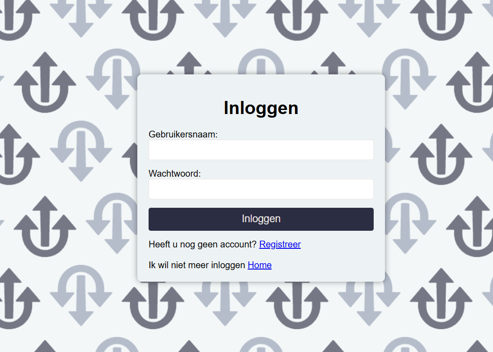
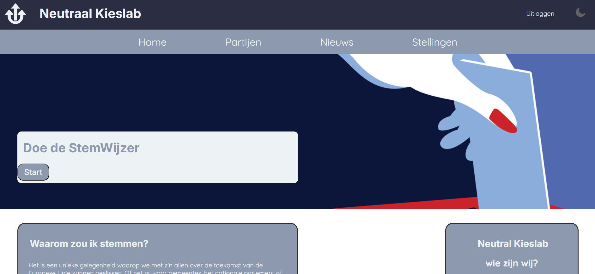
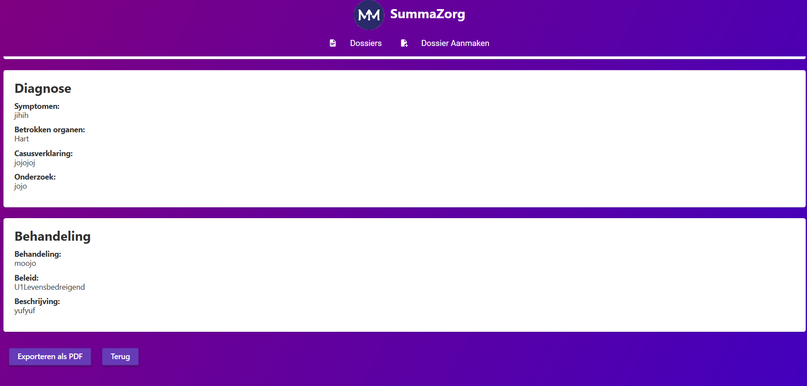
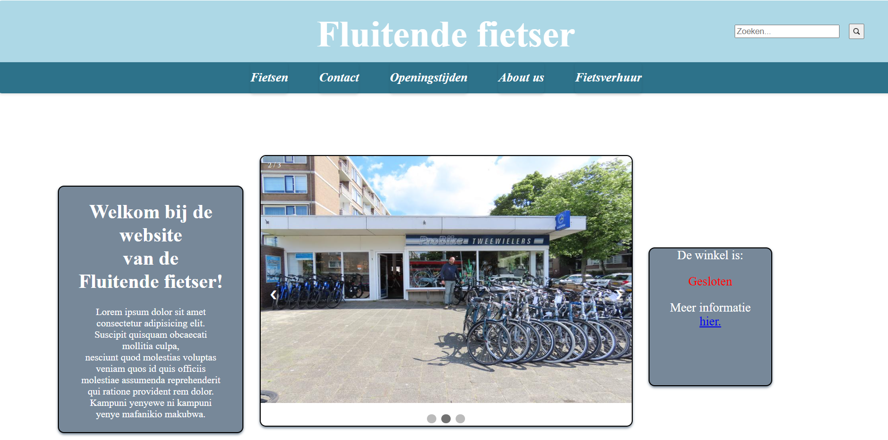

PHP - Stemwijzer Applicatie
Samen met klasgenoten ontwikkelden we een interactieve stemwijzer met een gebruikerslogin.
De applicatie is gebouwd met PHP en het is gekoppeld aan een database.
Loginpagina:

Hoofdscherm:

Bekijk dit project op GitHub voor de volledige broncode en documentatie.
C# - Dossier Applicatie
Voor de studenten van Summa Zorg ontwikkelden we een applicatie waarin gebruikers medische
dossiers kunnen beheren en als PDF exporteren. Met gebruik van SQLite voor opslag.
Dossierbeheer:

PDF-export:

De volledige project is beschikbaar op mijn GitHub.
JavaScript - Fietsenwinkel
Een webshop voor fietsen, waarin je producten kunt bekijken, zoeken en toevoegen aan een winkelmandje. De interface is volledig met JavaScript gebouwd.

Voor meer informatie alles is terug te vinden op GitHub.